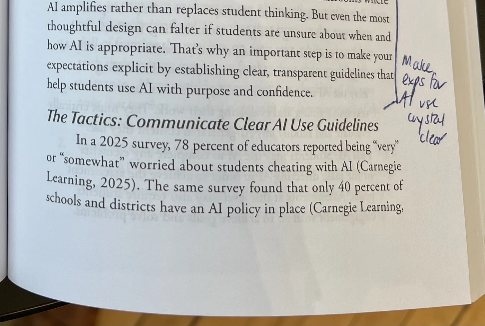
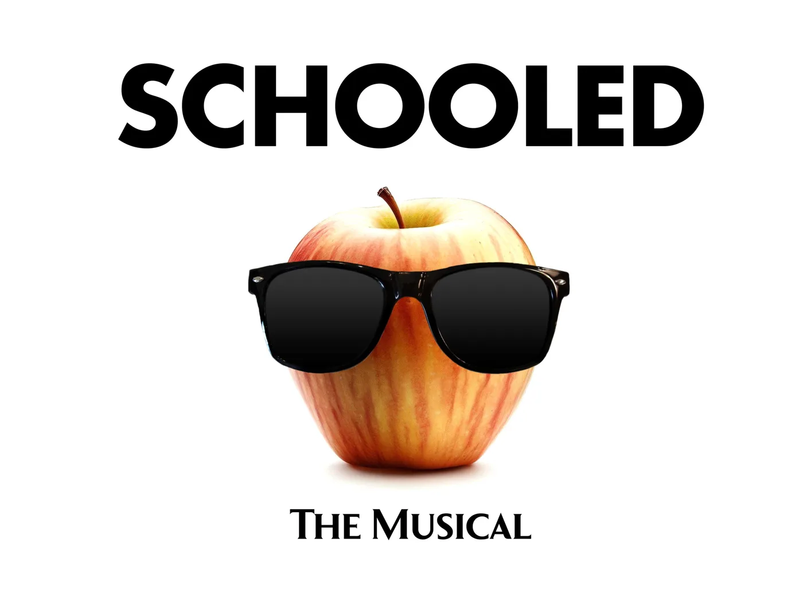

Educator’s Notebook #515 (February 24, 2026)
← Previous Issue · Next Issue →
Introduction
Update
With the launch of the book, preparations for the musical, and all the work surrounding these, this week is just an update, and the newsletter will return in mid/late March. In the meantime, here’s where you can find me:
**Seattle @ NAIS for *Irreplaceable***
It was a small moment, but it was an entirely new feeling: visiting a school, an administrator approaching with a copy of the book I had coauthored, opened to pages that had been annotated. I thought right away about the book by Remi Kalir Re/Marks on Power and the way annotation inscribes thought. But to be in conversation with people through printed prose was thrilling. Despite the digital saturation of my/our lives (or more likely because of it), it was excellent to be in conversation with someone through the printed word — the same way I love being in conversation with my favorite writers through reading their printed texts.
All to say: the book Irreplaceable: How AI Changes Everything (and Nothing) in Teaching and Learning is out and has been officially launched on Amazon now, too. Apparently they are sold out of their initial stock (!), so if they ask you if you’re still interested, please tell them you are! 🙂 You can also find the book (in stock) at the publisher Solution Tree.
This week I’ll be in Seattle for the NAIS conference co-leading two sessions: a master class on “Getting to Why with AI: Supporting and Empowering Teachers in Changing Times” (Thursday, 2/26, 3:15pm) and a regular session on “What Learning Science Teaches Us About AI” (Friday, 2/27, 1:15pm) Let me know if you’ll be there — I’d love to say hello in person.
**Austin @ SXSW EDU for *Schooled the Musical***
What started as a school meeting performance has taken a life of its own. Now expanded to a full length narrative, SXSW EDU will be hosting a performance of a staged reading of the first act. If the book on AI (above) channels core insights from two decades in the classroom and schools into how we can understand and engage this AI moment, the musical (below) channels core insights from two decades in schools into what it means to be a student or a teacher (or a head) in schools today. I am so excited for this reading.
Schooled the Musical will have its first performance of the extended narrative as part of SXSW EDU’s official programming on Wednesday, March 11 at 10am in Austin, TX. I’ll be in rehearsals 24/7 for the first ten days of March, so the newsletter will be out of commission during this time.
Thank you for your interest in these in the meantime, and I look forward to picking the newsletter back up in mid/late March!
Until then, enjoy!
Peter

